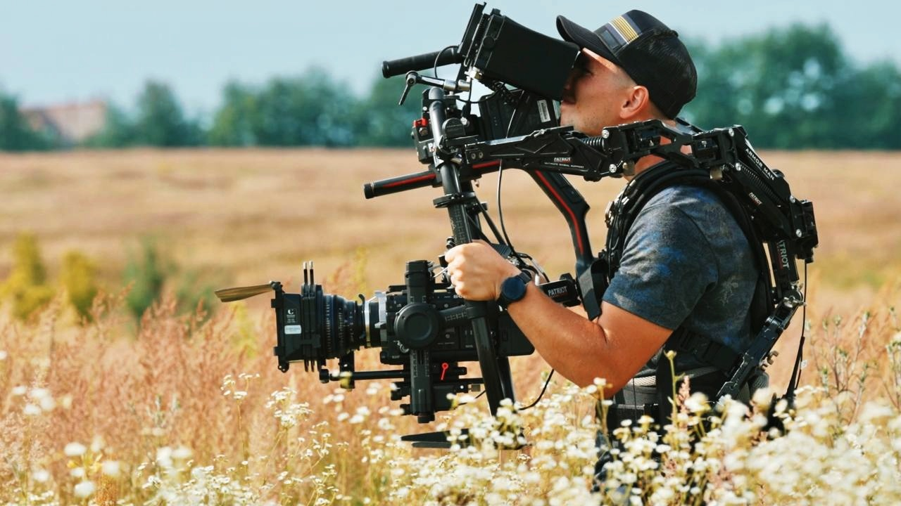

Director of Photography
Krasylnikov Denys

Projects
Про мене
9 років у сфері кіно та телевиробництва.
Зйомка у 20 країнах світу.
Масштабні комерційні проєкти, документальні фільми, YouTube-проекти та TV - це мій досвід.
Військова акредитація. Наразі, віддаю перевагу документальним фільмами та рекламі. Розглядаю пропозиції, в основі яких - цікаві ідеї.
Contacts